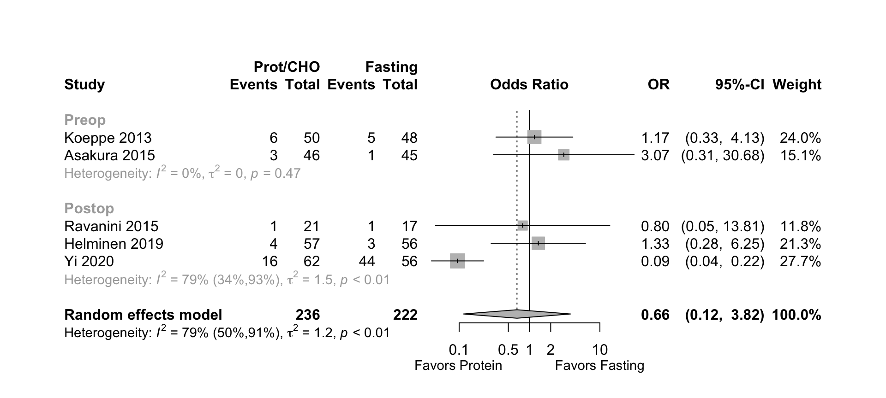
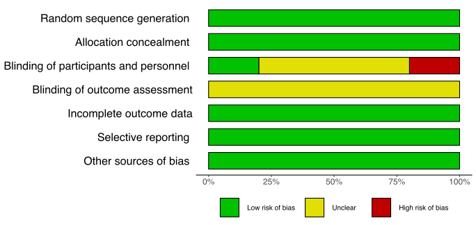
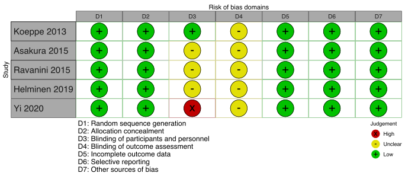
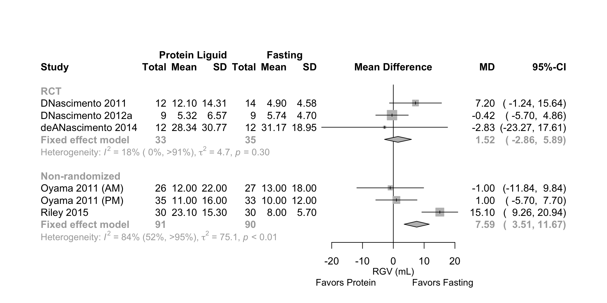
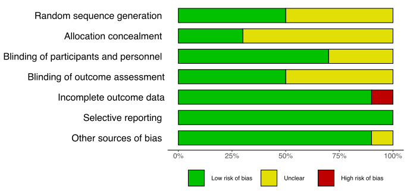
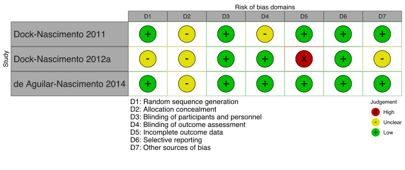
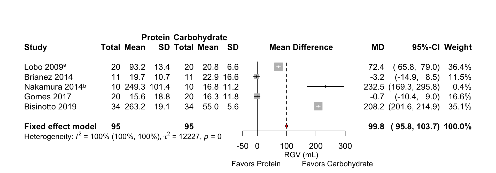
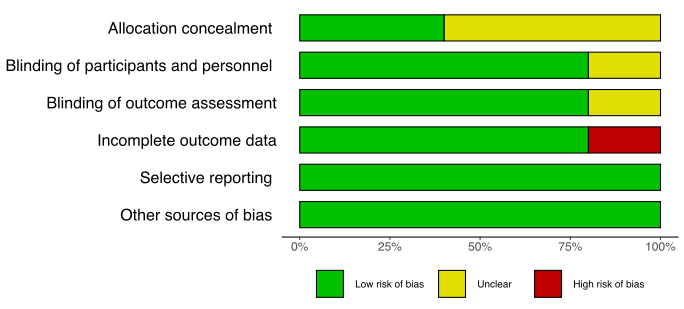
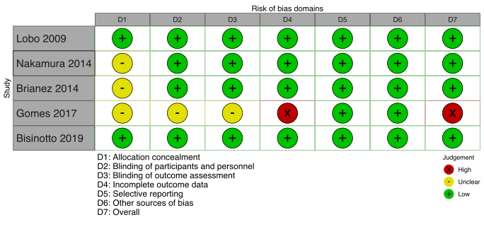
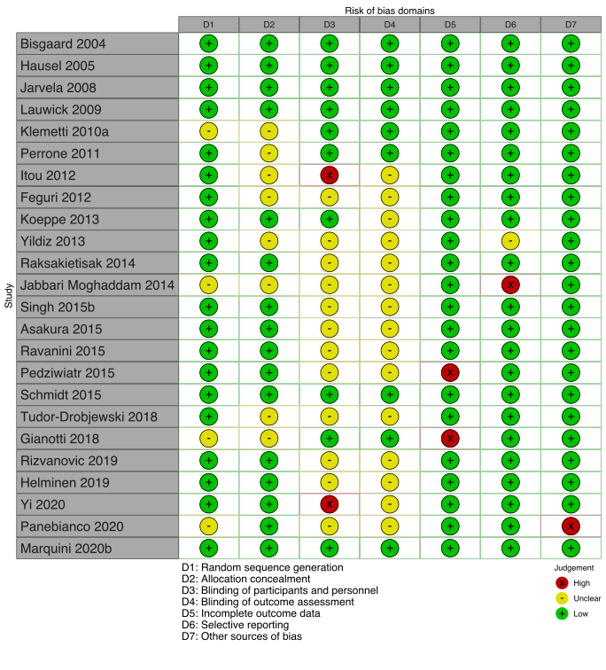

Table 1. Included studies according to age, surgery, and design (see References for citations).
| ID | Study | Analyzed (N) | Centers | Countrya | Surgery |
|---|---|---|---|---|---|
| Adult, Surgical | |||||
| RCT | |||||
| 5479 | Henriksen 2003 | 48 | 1 | Denmark | Other GI |
| 3823 | DNascimento 2011 | 50 | 1 | Brazila | Cholecystectomy |
| 3670 | Perrone 2011 | 17 | 1 | Brazila | Cholecystectomy |
| 3282 | DNascimento 2012a | 28 | 1 | Brazila | Cholecystectomy |
| 3513 | DNascimento 2012b | 48 | 1 | Brazila | Cholecystectomy |
| 2940 | Koeppe 2013 | 98 | 1 | Brazila | Endoscopy |
| 3090 | Pexe-Machado 2013 | 22 | 1 | Brazila | Other GI |
| 2806 | deANascimento 2014 | 24 | 1 | Brazila | Other GI |
| 2234 | Asakura 2015 | 134 | 1 | Japan | Various |
| 2256 | Ravanini 2015 | 38 | 1 | Brazila | Cholecystectomy |
| 2482 | Singh 2015a | 20 | 1 | Indiaa | Oral |
| 1993 | Karlsson 2016 | 73 | 1 | Sweden | Other GI |
| 1795 | Tsutsumi 2016 | 24 | 1 | Japan | Various |
| 1102 | van Stijn 2018 | 18 | 1 | Netherlands | Other GI |
| 466 | Helminen 2019 | 108 | 1 | Finland | Cholecystectomy |
| 165 | Marquini 2020ab | 74 | 1 | Brazila | Gyn |
| 6446 | Marquini 2020bb | 74 | 1 | Brazila | Gyn |
| 247 | Marquini 2020cb | 74 | 1 | Brazila | Gyn |
| 245 | Yi 2020 | 118 | 1 | Malaysiaa | Gyn |
| Nonrandomized Studies of Interventions | |||||
| 3588 | Oyama 2011 | 121 | 1 | Japan | Various |
| 7283 | Riley 2015 | 60 | 1 | USA | Gyn |
| Retrospective Cohort | |||||
| 6142 | Blum 2019 | 100 | 1 | USA | TKA/THA |
| Adult, Nonsurgical | |||||
| RCT | |||||
| 233 | Pai 2020 | 19 | 1 | USA | None (healthy) |
| Crossover | |||||
| 4092 | Lobo 2009 | 20 | 1 | UK | None (healthy) |
| 3728 | Awad 2011 | 10 | 1 | UK | None (healthy) |
| 2759 | Brianez 2014 | 11 | 1 | Brazila | None (healthy) |
| 2703 | Nakamura 2014 | 10 | 1 | Japan | None (healthy) |
| 1677 | Gomes 2017 | 20 | 1 | Brazila | None (healthy) |
| 6280 | Bisinotto 2019 | 34 | 1 | Brazila | None (healthy) |
| Pediatric, Nonsurgical | |||||
| RCT | |||||
| 1315 | Du 2017 | 48 | 1 | USA | None (healthy) |
| Multiple publications of the same study. | |||||
| a Non very high Human Development Index country. | |||||
Table 2. Occurrence of hunger, thirst, nausea, vomiting, and regurgitation in surgical studies.a
| Study | N | Liquid | >8 | 8-5 | 4-3 | 2 | (hr) | N (%) | N (%) | N (%) | N (%) | N (%) |
|---|---|---|---|---|---|---|---|---|---|---|---|---|
| Adult, Surgical | ||||||||||||
| RCT | ||||||||||||
| Perrone 2011 | 9 | Water | 474 | 237 | 0 | 0 (0) | 0 (0) | |||||
| 8 | Prot/CHO | 474 | 237 | 0 (0) | 0 (0) | |||||||
| DNascimento 2012a | 9 | Fasting | 0 | 0 (0) | ||||||||
| 10 | CHO | 400 | 200 | 0 (0) | ||||||||
| 9 | Prot/CHO | 400 | 200 | 0 (0) | ||||||||
| DNascimento 2012b | 12 | Fasting | 0 | 0 (0) | ||||||||
| 12 | Water | 400 | 200 | 0 (0) | ||||||||
| 12 | CHO | 400 | 200 | 0 (0) | ||||||||
| 12 | Prot/CHO | 400 | 200 | 0 (0) | ||||||||
| Koeppe 2013 | 48 | Fasting | 0 | 32 (67) | 26 (54) | 5 (10) | 9 (19) | |||||
| 50 | Prot/CHO | 200 | 22 (44) | 23 (46) | 6 (12) | 13 (26) | ||||||
| Pexe-Machado 2013 | 12 | Fasting | 0 | 0 (0) | ||||||||
| 10 | Prot/CHO | 400 | 200 | 0 (0) | ||||||||
| Asakura 2015 | 45 | Fasting | 0 | 1 (2) | ||||||||
| 43 | CHO | 1000 | 3 (7) | |||||||||
| 46 | Prot/CHO | 250 | 3 (6) | |||||||||
| Ravanini 2015 | 17 | Fasting | 4 | 1 (6) | 0 (0) | |||||||
| 21 | Prot/CHO | 200 | 1 (5) | 1 (5) | ||||||||
| Singh 2015a | 5 | Fasting | 0 | 0 (0) | ||||||||
| 5 | Water | 400 | 200 | 0 (0) | ||||||||
| 5 | CHO | 400 | 200 | 0 (0) | ||||||||
| 5 | Prot/CHO | 400 | 200 | 0 (0) | ||||||||
| Helminen 2019 | 56 | Fasting | 2 | 3 (5) | 4 (7) | |||||||
| 57 | Prot/CHO | 200 | 4 (7) | 3 (5) | ||||||||
| Marquini 2020b | 40 | Waterc | 200 | 10 | 7 (18) | 4 (10) | ||||||
| 34 | Prot/CHO | 200 | 7 (20) | 4 (12) | ||||||||
| Yi 2020 | 56 | Fasting | > 0 | 44 (78) | 34 (61) | |||||||
| 62 | Prot/CHO | 474 | 237 | 16 (26) | 11 (18) | |||||||
| Retrospective Cohort | ||||||||||||
| Blum 2019 | 50 | Fasting | 48 | 6 (12) | 3 (6) | |||||||
| 50 | Prot/CHO | 474 | 296 | 2 (4) | 1 (2) | |||||||
| RCT: randomized controlled trial | ||||||||||||
| a Only Koeppe 20131 reported less patient discomfort in the protein versus the carbohydrate arm (18% vs. 42%, p = .01). | ||||||||||||
| b When outcome assessed relative to surgery where 0 is prior to induction and other values hours postop. | ||||||||||||
| c Distilled water, 4 drops red dye, 2 drops sucrose. | ||||||||||||
Table 3. Comparative hunger ratings in included studies (surgical and nonsurgical) according to fasting, liquid and volume.
| Study | Liquid | N | >8 | 8-5 | 4-3 | 2 | Time (hr)a | Scaleb | M (95% CI) | Med (IQR) | Range |
|---|---|---|---|---|---|---|---|---|---|---|---|
| Adult, Surgical | |||||||||||
| RCT | |||||||||||
| Tsutsumi 2016 | Water | 12 | 450 | 0 | 0→100 | 43 | (30-59) | ||||
| Prot/CHO | 12 | 600 | 13 | (3-20) | |||||||
| Helminen 2019 | Fasting | 56 | 0 | 0→100 | 18 (5-50) | ||||||
| Prot/CHO | 57 | 200 | 10 (0-30) | ||||||||
| Marquini 2020c | Waterc | 40 | 200 | 10 | 0→10 | 3.9 (2.9-4.8) | 4 | (0-10) | |||
| Prot/CHO | 34 | 200 | 2.1 (1.0-3.1) | 0 | (0-8) | ||||||
| Nonrandomized Studies of Interventions | |||||||||||
| Oyama 2011 (AM) | Fasting | 26 | 0 | 1→5 NRS | 2.5 (0.5-4.5)d | ||||||
| Prot/CHO | 27 | 300 | 200 | 3 (1-5) | |||||||
| Oyama 2011 (PM) | Fasting | 35 | 0 | 1→5 NRS | 4 (2-6)d | ||||||
| Prot/CHO | 33 | 500 | 300 | 200 | 3 (1-5) | ||||||
| Pediatric, Nonsurgical (age 8-14 years) | |||||||||||
| 0 hr | |||||||||||
| Du 2017 | Juicee | 16 | 296 | 2 | 5→1 HSSf | 2.0 (1.6-2.4) | |||||
| Milk | 16 | 296 | 2.0 (1.3-2.6) | ||||||||
| Prot/CHO | 16 | 296 | 2.2 (1.7-2.6) | ||||||||
| RCT: randomized controlled trial; M: mean; Med: median; IQR: interquartile range; NRS: numeric rating scale. | |||||||||||
| a When outcome assessed relative to surgery where 0 is prior to induction and other values hours postop or relative to liquids in nonsurgical studies. | |||||||||||
| b Arrow (→) indicates best to worst hunger (all visual analogue except Du 2017 and Oyama 2011). | |||||||||||
| c Distilled water, 4 drops red dye, 2 drops sucrose. | |||||||||||
| d Range as reported but apparent error being <1 or >5. | |||||||||||
| e Apple juice. | |||||||||||
| f Hunger Satiety Scale. | |||||||||||
Table 4. Comparative thirst ratings according to fasting, liquid and volume.
| Study | Liquid | N | >8 | 8-5 | 4-3 | 2 | Time (hr)a | Scaleb | Mn (95% CI) | Med (IQR) | Range |
|---|---|---|---|---|---|---|---|---|---|---|---|
| Adult, Surgical | |||||||||||
| RCT | |||||||||||
| Henriksen 2003 | Water | 16 | 0 | 0→10 | 3.4 (1.8-7.5) | ||||||
| CHO | 17 | 400 | 400 | 3.2 (0.6-3.4) | |||||||
| Prot/CHO | 15 | 400 | 400 | 3.1 (0.2-3.3) | |||||||
| Tsutsumi 2016 | Water | 12 | 450 | 0 | 0→100 | 28.0 | (13-30) | ||||
| Prot/CHO | 12 | 600 | 12.0 | (10-15) | |||||||
| Helminen 2019 | Fasting | 56 | 0 | 0→100 | 40.0 (8.0-63.0) | ||||||
| Prot/CHO | 57 | 200 | 22.0 (6.0-50.0) | ||||||||
| Marquini 2020c | Waterc | 40 | 200 | 10 | 0→10 | 3.6 (2.8-4.5) | 4.0 | (0-8) | |||
| Prot/CHO | 34 | 200 | 0.8 (0.2-1.5) | 0.0 | (0-8) | ||||||
| Nonrandomized Studies of Interventions | |||||||||||
| Oyama 2011 (AM) | Fasting | 26 | 0 | 1→5 NRS | 2.5 (0.5-4.5)d | ||||||
| Prot/CHO | 27 | 300 | 200 | 2.0 (0.0-4.0) | |||||||
| Oyama 2011 (PM) | Fasting | 35 | 0 | 1→5 NRS | 3.0 (1.0-5.0) | ||||||
| Prot/CHO | 33 | 500 | 300 | 200 | 2.0 (0.8-3.2)d | ||||||
| RCT: randomized controlled trial; M: mean; Med: median; IQR: interquartile range; NRS: numeric rating scale. | |||||||||||
| a Relative to surgery where 0 is prior to induction and other values hours postop. | |||||||||||
| b Arrow (→) indicates least to worst VAS unless otherwise noted. | |||||||||||
| c Distilled water, 4 drops red dye, 2 drops sucrose. | |||||||||||
| d Range as reported but apparent error being <1. | |||||||||||
Table 5. Pain and comfort ratings according to fasting, liquid and volume.
| Study | Liquid | N | >8 | 8-5 | 4-3 | 2 | Timea | Scaleb | Mean (95% CI) | Med (IQR) |
|---|---|---|---|---|---|---|---|---|---|---|
| Adult, Surgical | ||||||||||
| RCT | ||||||||||
| Comfort | ||||||||||
| Asakura 2015 | Fasting | 45 | 24 | QoR-40c | 56 (48-59) | |||||
| Prot/CHO | 46 | 250 | 24 | 56 (52-59) | ||||||
| CHO | 43 | 1000 | 24 | 12→60 | 56 (51-59) | |||||
| Pain | ||||||||||
| Ravanini 2015 | Fasting | 17 | 4 | VASd ?→? | 0.64 (0.10-1.18) | |||||
| Prot/CHO | 21 | 200 | 4 | 0.72 (0.11-1.33) | ||||||
| Karlsson 2016 | Water | 26 | 800 | 400 | 2 | VASe 0→100 | 23.3 | |||
| Prot/CHO | 22 | 800 | 400 | 2 | 21.1 | |||||
| CHO | 25 | 800 | 400 | 2 | 21.8 | |||||
| Helminen 2019 | Fasting | 56 | 2 | VAS 0→100 | 30 (11-50) | |||||
| Prot/CHO | 57 | 200 | 2 | 35 (14-48) | ||||||
| Marquini 2020c | Clear | 40 | 200 | 10 | VAS 0→10 | 3.5 (2.6-4.4) | ||||
| Prot/CHO | 34 | 200 | 10 | 1.6 (0.6-2.6) | ||||||
| RCT: randomized controlled trial; Med: median; IQR: interquartile range; NRS: numeric rating scale. | ||||||||||
| a Following surgery. | ||||||||||
| b Arrow (→) indicates best to worst. | ||||||||||
| c Quality of Recovery Score physical comfort domain. | ||||||||||
| d Did not state the range or direction of the visual analogue scale. | ||||||||||
| e Abdominal pain in women undergoing laparoscopic gastric bypass. | ||||||||||
Figure 1. Pooled incidence of nausea — randomized trials comparing protein-containing drinks with fasting in adult surgical patients. 
Figure 2. Summary and individual study risk of bias appraisal for pooled randomized controlled trials reporting nausea.


Table 6. Patient-reported nausea in crossover studies of adults.
| Study | Liquid | N | Ingested (mL) | Time Assessed | N (%) |
|---|---|---|---|---|---|
| Adult, Nonsurgical | |||||
| Crossover | |||||
| Lobo 2009 | CHO | 20 | 400 | When injested | 0 (0) |
| Prot/CHO | 20 | 300 | 1 (5) | ||
| Prot/CHO | 20 | 400 | 0 (0) | ||
| Bisinotto 2019 | CHO | 34 | 200 | Few hrs | 0 (0) |
| Prot/CHO | 34 | 200 | 1 (3) | ||
| CHO: carbohydrate | |||||
Table 7. Residual gastric volumes at induction in randomized controlled trials of adult surgical patients according to fasting, liquid and volume.
| Author | Liquid | N | >8 | 8-5 | 4-3 | 2 | Measure | M (SD) | Med (IQR) | Range |
|---|---|---|---|---|---|---|---|---|---|---|
| Adult, Surgical | ||||||||||
| RCT | ||||||||||
| DNascimento 2011 | Fasting | 12 | Asp | 12.1 | 5 (0.0-13) | (0-50) | ||||
| Water | 12 | 400 | 200 | 12.9 | 8 (4.8-19) | (0-50) | ||||
| CHO | 12 | 400 | 200 | 12.6 | 7 (1.7-8.2) | (0-80) | ||||
| Prot/CHO | 14 | 400 | 200 | 4.9 | 4 (1.8-8.0) | (0-15) | ||||
| DNascimento 2012a | Fasting | 9 | Asp | 3 (0.0-7.0) | (0-20) | |||||
| CHO | 10 | 400 | 200 | 7 (1.0-7.0) | (0-10) | |||||
| Prot/CHO | 9 | 400 | 200 | 5 (3.0-7.0) | (0-15) | |||||
| deANascimento 2014 | Fasting | 12 | Asp | 25 (17-42) | (10-70) | |||||
| Prot/CHO | 12 | 200 | 10 (7.1-44) | (0-100) | ||||||
| Nonrandomized Studies of Interventions | ||||||||||
| Oyama 2011 (AM) | Fasting | 26 | Asp | 12.0 (22) | ||||||
| Prot/CHO | 27 | 300 | 200 | 13.0 (18) | ||||||
| Oyama 2011 (PM) | Fasting | 35 | Asp | 11.0 (16) | ||||||
| Prot/CHO | 33 | 500 | 300 | 200 | 10.0 (12) | |||||
| Riley 2015 | Fasting | 30 | Asp | 23.1 (15.3) | ||||||
| Prot/CHO | 30 | 237 | 8.0 (5.7) | |||||||
| RGV: residual gastric volumne; Med: median; IQR: interquartile range; CHO: carbohydrate; RCT: randomized controlled trial; Asp: aspiration. | ||||||||||
Table 8. Residual gastric volumes in randomized controlled trials of nonsurgical healthy volunteers according to fasting, liquid and volume.
| Study | Liquid | N | 2 hr | 0 hr | Measure | 1 hr | 2 hr | 3 hr |
|---|---|---|---|---|---|---|---|---|
| Adult, Nonsurgical | ||||||||
| RCT | ||||||||
| Pai 2020 | Clear | 9 | 474 | US | 114.9 (70.3) | 61.4 (47.9) | ||
| Prot/CHO | 10 | 474 | 179.4 (80.7) | 100.5 (44.6) | ||||
| Crossover | ||||||||
| Lobo 2009 | CHO | 20 | 400 | MRI | 141.8 (11.6) | 20.8 (6.6) | ||
| Prot/CHO | 20 | 300 | 183.2 (7.4) | 64.3 (11.7) | ||||
| Prot/CHO | 20 | 400 | 237.7 (13.8) | 93.2 (13.4) | ||||
| Brianez 2014 | CHO | 11 | 400 | 200 | MRI | 22.9 (16.6) | 21.5 (24.1) | |
| Prot/CHO | 11 | 400 | 200 | 19.7 (10.7) | 15.1 (10.1) | |||
| Nakamura 2014 | CHO | 10 | 500 | MRI | 55 (34-77) | 13.6 | ||
| Prot/CHO | 10 | 500 | 411 (371-452) | 236 | ||||
| Gomes 2017 | CHO | 20 | 400 | 200 | US | 16.3 (11.8) | 14.6 (10.4) | |
| Prot/CHO | 20 | 400 | 200 | 15.6 (18.8) | 13.7 (10.3) | |||
| Bisinotto 2019 | CHO | 34 | 200 | US | 55.0 (5.6) | |||
| Prot/CHO | 34 | 200 | 263.2 (19.1) | |||||
| Pedatric, Nonsurgical | ||||||||
| Proportion of Baseline Gastric Antral CSA | ||||||||
| RCT | ||||||||
| Du 2017 | Clear | 16 | 296 | US | 0.54 (0.06) | 0.16 (0.04) | ||
| Milk | 16 | 296 | 0.27 (0.04) | 0.17 (0.03) | ||||
| Prot/CHO | 16 | 296 | 0.69 (0.05) | 0.27 (0.05) | ||||
| RGV: residual gastric volumne; IQR: interquartile range; M: mean; SD: standard deviation; CHO: carbohydrate; MRI: magnetic resonance imaging; US: ultrasound; CSA: cross-sectional area. | ||||||||
Figure 3. Forest plot for pooled mean difference estimate of residual gastric volume in randomized and non-randomized trials of adult surgical patients – fasted and those given protein-containing drinks.

Mean differences estimated from from reported medians, interquartile and overall ranges.
Figure 4. Individual study and summary risk of bias appraisals for randomized controlled trials examining residual gastric volume.


Figure 4. Forest plot for pooled mean difference in residual gastric volume in crossover trials of adult nonsurgical patients at 2 hours — protein and carbohydrate versus carbohydrate drinks.

a Lobo 2009 included the protein comparison arm with the highest residual gastric volume.
b Nakamura 2014 did not report exact 2-hour volumes — median and range were estimated from figures. Following carbohydrate drink residual gastric volumes were exceedingly low.
Figure 5. Individual study and summary risk of bias appraisals for crossover trials examining residual gastric volume in non-surgical patients..


Table 9. Increased residual gastric volumes and pH < 2.5.
| Study | Liquid | N | 2 | 0 | Time (hr)a | N (%) | N (%) |
|---|---|---|---|---|---|---|---|
| Adult, Surgical | |||||||
| RCT | |||||||
| Riley 2015 | Fasting | 30 | 0 | 8 (27)b | 14 (47) | ||
| Prot/CHO | 30 | 237 | 0 | 0 (0)b | 1 (3) | ||
| Adult, Nonsurgical | |||||||
| RCT | |||||||
| Pai 2020 | Clear | 9 | 474 | 2 | 1 (11)c | ||
| Prot/CHO | 10 | 474 | 2 | 6 (60)c | |||
| RCT: randomized controlled trial; RGV: residual gastric volume. | |||||||
| a When outcome assessed relative to surgery where 0 is prior to induction for surgical studies, and hours after liquid ingestion for nonsurgical studies. | |||||||
| b RGV > 25 ml | |||||||
| c RGV > 1.5 ml/g | |||||||
Table 10. Gastric pH at induction.
| Author | Liquid | N | >8 | 8-5 | 4-3 | 2 | Mean (SD) |
|---|---|---|---|---|---|---|---|
| Adult, Surgical | |||||||
| Nonrandomized Studies of Interventions | |||||||
| Riley 2015 | Fastinga | 30 | 1.7 (1.3) | ||||
| Prot/CHOa | 30 | 237 | 3.0 (2.8) | ||||
| a Arms not receiving famotidine. | |||||||
Table 11. Complication rates reported in surgical studies.
| Study | Liquid | N | >8 | 8-5 | 4-3 | 2 | N (%) | Description |
|---|---|---|---|---|---|---|---|---|
| Adult, Surgical | ||||||||
| RCT | ||||||||
| Perrone 2011 | Water | 9 | 474 | 237 | 0 (0) | Anesthetic or postoperative complications | ||
| Prot/CHO | 8 | 474 | 237 | 0 (0) | ||||
| DNascimento 2012a | Fasting | 9 | 0 (0) | No description | ||||
| CHO | 10 | 400 | 200 | 0 (0) | ||||
| Prot/CHO | 9 | 400 | 200 | 0 (0) | ||||
| DNascimento 2012b | Fasting | 12 | 0 (0) | Postoperative | ||||
| Water | 12 | 400 | 200 | 0 (0) | ||||
| CHO | 12 | 400 | 200 | 0 (0) | ||||
| Prot/CHO | 12 | 400 | 200 | 0 (0) | ||||
| Pexe-Machado 2013 | Fasting | 12 | 4 (33) | Infectious complications | ||||
| Prot/CHO | 10 | 400 | 200 | 3 (30) | ||||
| deANascimento 2014 | Fasting | 12 | 0 (0) | During endoscopic procedures | ||||
| Prot/CHO | 12 | 200 | 0 (0) | |||||
| Ravanini 2015 | Fasting | 17 | 0 (0) | Anesthetic and postoperative | ||||
| Prot/CHO | 21 | 200 | 0 (0) | |||||
| Singh 2015a | Fasting | 5 | 0 (0) | Postoperative | ||||
| Water | 5 | 400 | 200 | 0 (0) | ||||
| CHO | 5 | 400 | 200 | 0 (0) | ||||
| Prot/CHO | 5 | 400 | 200 | 0 (0) | ||||
| Marquini 2020a | Clear | 40 | 200 | 0 (0) | No description | |||
| Prot/CHO | 34 | 200 | 0 (0) | |||||
| Marquini 2020b | Clear | 40 | 200 | 0 (0) | Anesthetic complications | |||
| Prot/CHO | 34 | 200 | 0 (0) | |||||
| Marquini 2020c | Clear | 40 | 200 | 0 (0) | Anesthetic complications | |||
| Prot/CHO | 34 | 200 | 0 (0) | |||||
| Yi 2020 | Fasting | 56 | 5 (9) | Infection | ||||
| Prot/CHO | 62 | 474 | 237 | 1 (2) | ||||
| RCT: randomized controlled trial. | ||||||||
| Study | Liquid | N | Mean (SD) | Median (IQR) | Range |
|---|---|---|---|---|---|
| Adult, Surgical | |||||
| RCT | |||||
| Perrone 2011 | Water | 9 | 1 | (1-2) | |
| Prot/CHO | 8 | 1 | (1-2) | ||
| Pexe-Machado 2013 | Fasting | 12 | 15.6 (9.3) | 14 | (4-34) |
| Prot/CHO | 10 | 8.1 (3.7) | 7 | (4-17) | |
| Asakura 2015 | Fasting | 45 | 3 (2-6) | ||
| CHO | 43 | 3 (2-3) | |||
| Prot/CHO | 46 | 3 (2-3) | |||
| Ravanini 2015 | Fasting | 17 | 2.0 | ||
| Prot/CHO | 21 | 2.0 | |||
| Retrospective Cohort | |||||
| Blum 2019 | Fasting | 50 | 2.6 (0.9) | 2 | |
| Prot/CHO | 50 | 1.9 (0.9) | 2 | ||
| RCT: randomized controlled trial. | |||||
Table 13. Blood pressure at, and following, induction in Singh 2015 and Oyama 2015.
| Study | Liquid | N | Hr | SBP | (SD) | DBP | (SD) | Hr | SBP | (SD) | DBP | (SD) |
|---|---|---|---|---|---|---|---|---|---|---|---|---|
| Adult, Surgical | ||||||||||||
| RCT | ||||||||||||
| Singh 2015a | Fasting | 5 | 0 | 138.4 | (36) | 83.0 | (17) | 2 | 124.8 | (12) | 82.4 | (10) |
| Water | 5 | 0 | 112.0 | (13) | 73.6 | (14) | 2 | 108.8 | (5) | 71.2 | (5) | |
| CHO | 5 | 0 | 110.8 | (13) | 66.4 | (9) | 2 | 113.6 | (5) | 72.4 | (4) | |
| Prot/CHO | 5 | 0 | 116.6 | (13) | 69.0 | (11) | 2 | 115.0 | (7) | 73.0 | (5) | |
| Nonrandomized Studies of Interventions | ||||||||||||
| Oyama 2011 (AM) | Fasting | 26 | 0 | 133.0 | (21) | 73.0 | (12) | 0.08 | 75.0 | (16) | 40.0 | (10) |
| Prot/CHO | 27 | 0 | 123.0 | (18) | 70.0 | (11) | 0.08 | 76.0 | (15) | 42.0 | (9) | |
| Oyama 2011 (PM) | Fasting | 35 | 0 | 144.0 | (21) | 77.0 | (11) | 0.08 | 82.0 | (18) | 45.0 | (9) |
| Prot/CHO | 33 | 0 | 140.0 | (24) | 75.0 | (15) | 0.08 | 83.0 | (18) | 45.0 | (13) | |
| RCT: randomized controlled trial; Hr: hour; SBP: systolic blood pressure; DBP: diastolic blood pressure; SD: standard deviation. | ||||||||||||
Table 14. Characteristics of 29 included studies examining protein-containing drinks.
| Study | Dates | Country | (N) | Pilot | Setting | Gen | Reg | Sed | Type of Surgery | Registered |
|---|---|---|---|---|---|---|---|---|---|---|
| Adult, Surgical | ||||||||||
| RCT | ||||||||||
| Henriksen 2003 | DNK | 58 | Hosp | • | Other GI | |||||
| DNascimento 2011 | BRA | 53 | Hosp | • | Cholecystectomy | |||||
| Perrone 2011 | BRA | 26 | Hosp | • | • | Cholecystectomy | • | |||
| DNascimento 2012a | 10/08-10/10 | BRA | 36 | Hosp | • | Cholecystectomy | ||||
| DNascimento 2012b | BRA | 55 | Hosp | • | Cholecystectomy | |||||
| Koeppe 2013 | 03/11-11/11 | BRA | 98 | Hosp | • | Endoscopy | ||||
| Pexe-Machado 2013 | 03/10-12/11 | BRA | 30 | Hosp | • | • | Other GI | • | ||
| deANascimento 2014 | BRA | 35 | Amb | • | Other GI | • | ||||
| Asakura 2015 | 01/12-03/13 | JPN | 150 | Hosp | • | Various | • | |||
| Ravanini 2015 | BRA | 38 | Hosp | • | Cholecystectomy | |||||
| Singh 2015a | IND | 20 | Hosp | • | Oral | |||||
| Karlsson 2016 | SWE | 90 | Hosp | • | Other GI | |||||
| Tsutsumi 2016 | JPN | 25 | Hosp | • | Various | • | ||||
| van Stijn 2018 | 12/08-11/09 | NLD | 20 | • | Hosp | • | Other GI | • | ||
| Helminen 2019 | 04/13-05/16 | FIN | 113 | Hosp | • | Cholecystectomy | • | |||
| Marquini 2020aa | 01/16-06/16 | BRA | 80 | Hosp | • | Gyn | • | |||
| Marquini 2020ba | 01/16-06/16 | BRA | 80 | Hosp | • | Gyn | • | |||
| Marquini 2020ca | 01/16-06/16 | BRA | 80 | Hosp | • | Gyn | • | |||
| Yi 2020 | 10/17-09/19 | MYS | 118 | Hosp | • | Gyn | • | |||
| Nonrandomized Studies of Interventions | ||||||||||
| Oyama 2011 | 05/09-08/09 | JPN | 122 | Hosp | • | Various | ||||
| Riley 2015 | USA | 60 | • | Hosp | • | Gyn | ||||
| Retrospective Cohort | ||||||||||
| Blum 2019 | 01/14-12/18 | USA | 100 | Hosp | • | TKA/THA | ||||
| Adult, Nonsurgical | ||||||||||
| RCT | ||||||||||
| Pai 2020 | USA | 20 | • | Other | None (healthy) | |||||
| Crossover | ||||||||||
| Lobo 2009 | GBR | 20 | Hosp | None (healthy) | ||||||
| Awad 2011 | 07/09-01/10 | GBR | 10 | • | Hosp | None (healthy) | • | |||
| Brianez 2014 | 03/12-06/12 | BRA | 11 | Amb | None (healthy) | |||||
| Nakamura 2014 | JPN | 10 | Hosp | None (healthy) | ||||||
| Gomes 2017 | BRA | 20 | Other | None (healthy) | • | |||||
| Bisinotto 2019 | BRA | 34 | Other | None (healthy) | ||||||
| Pediatric, Nonsurgical | ||||||||||
| RCT | ||||||||||
| Du 2017 | 07/16-08/16 | USA | 50 | • | Amb | None (healthy) | • | |||
| Gen: general; Reg: regional; Sed: sedation; Hosp: hospital; Amb: ambulatory; TKA: total knee arthroplasty; THA: total hip arthroplasty. | ||||||||||
| a Multiple publications from the same study. | ||||||||||
Table 15. Characteristics of patients in included studies.
| Study | Analyzed | I | II | I-II | III | (%) | Mean | Med | White | Black | Asian | Mean | Med | DM (%) |
|---|---|---|---|---|---|---|---|---|---|---|---|---|---|---|
| Adult, Surgical | ||||||||||||||
| RCT | ||||||||||||||
| Henriksen 2003 | 48 | 100 | 17 | 64 | 27 | |||||||||
| DNascimento 2011 | 50 | 63 | 36 | 100 | 41 | 25 | ||||||||
| Perrone 2011 | 17 | 59 | 41 | 65 | 38 | 29 | ||||||||
| DNascimento 2012a | 28 | 100 | ||||||||||||
| DNascimento 2012b | 48 | 69 | 31 | 100 | 40 | 25 | ||||||||
| Koeppe 2013 | 98 | 50 | 50 | 60 | 48 | 25 | 9 | |||||||
| Pexe-Machado 2013 | 22 | 27 | 59 | 14 | 64 | 48 | 25 | |||||||
| deANascimento 2014 | 24 | 88 | 12 | 79 | 38 | 26 | ||||||||
| Asakura 2015 | 134 | 30 | 70 | 30 | 64 | 100 | 12 | |||||||
| Ravanini 2015 | 38 | 55 | 45 | 100 | 45 | |||||||||
| Singh 2015a | 20 | 80 | 20 | 10 | 28 | 100 | 21 | |||||||
| Karlsson 2016 | 73 | 100 | 42 | 37 | ||||||||||
| Tsutsumi 2016 | 24 | 38 | 62 | 33 | 43 | 100 | 24 | |||||||
| van Stijn 2018 | 18 | 28 | 61 | 26 | ||||||||||
| Helminen 2019 | 113 | 64 | 36 | 81 | 47 | 29 | 9 | |||||||
| Marquini 2020aa | 74 | 100 | 100 | 41 | 40 | 28 | 27 | |||||||
| Marquini 2020ba | 74 | 100 | 100 | 41 | 40 | |||||||||
| Marquini 2020ca | 74 | 100 | 100 | 41 | 40 | 28 | 27 | |||||||
| Yi 2020 | 118 | 39 | 58 | 3 | 100 | 50 | 100 | |||||||
| Nonrandomized Studies of Interventions | ||||||||||||||
| Oyama 2011 | 121 | 18 | 79 | 2 | 60 | 61 | 100 | 24 | ||||||
| Riley 2015 | 60 | 100 | ||||||||||||
| Retrospective Cohort | ||||||||||||||
| Blum 2019 | 100 | 51 | 68 | 69 | 14 | |||||||||
| Adult, Nonsurgical | ||||||||||||||
| RCT | ||||||||||||||
| Pai 2020 | 19 | |||||||||||||
| Crossover | ||||||||||||||
| Lobo 2009 | 60 | 50 | 29 | 23 | ||||||||||
| Awad 2011 | 30 | 29 | 100 | 23 | ||||||||||
| Brianez 2014 | 22 | 26 | 26 | |||||||||||
| Nakamura 2014 | 20 | 32 | 100 | 22 | ||||||||||
| Gomes 2017 | 40 | 50 | 25 | 24 | ||||||||||
| Bisinotto 2019 | 68 | 100 | 62 | 27 | 25 | |||||||||
| Pediatric, Nonsurgical | ||||||||||||||
| RCT | ||||||||||||||
| Du 2017 | 48 | 100 | 52 | 11 | 83 | 13 | 4 | 20 | ||||||
| Med: median | ||||||||||||||
| a Multiple publications from he same study. | ||||||||||||||
Table 16. Liquid consumption prior to surgery or outcome measurement and amounts according to study arm.
| Author | Liquid | N | Solids | Liquids | Timea (hr) | Amount (mL) | Timea (hr) | Amount (mL) |
|---|---|---|---|---|---|---|---|---|
| Adult, Surgical | ||||||||
| RCT | ||||||||
| Henriksen 2003 | Water | 16 | 9 | 3 | 3 | |||
| CHO | 17 | 12 | 3 | 12 | 400 | 3 | 400 | |
| 15 | 12 | 3 | 12 | 400 | 3 | 400 | ||
| DNascimento 2011 | Fasting | 12 | 8 | 8 | ||||
| Water | 12 | 8 | 8 | 8 | 400 | 2 | 200 | |
| CHO | 12 | 8 | 8 | 8 | 400 | 2 | 200 | |
| 14 | 8 | 8 | 8 | 400 | 2 | 200 | ||
| Perrone 2011 | Water | 9 | 6 | 3 | 12 | 474 | 3 | 237 |
| 8 | 12 | 3 | 6 | 474 | 3 | 237 | ||
| DNascimento 2012a | Fasting | 9 | 8 | 8 | ||||
| CHO | 10 | 8 | 2 | 8 | 400 | 2 | 200 | |
| 9 | 8 | 2 | 8 | 400 | 2 | 200 | ||
| DNascimento 2012b | Fasting | 12 | 8 | 8 | ||||
| Water | 12 | 8 | 2 | 8 | 400 | 2 | 200 | |
| 12 | 8 | 2 | 8 | 400 | 2 | 200 | ||
| CHO | 12 | 8 | 2 | 8 | 400 | 2 | 200 | |
| Koeppe 2013 | Fasting | 48 | 8 | 8 | 8 | |||
| 50 | 6 | 2 | 2 | 200 | ||||
| Pexe-Machado 2013 | Fasting | 12 | 6 | 6 | 6 | |||
| 10 | 6 | 3 | 12 | 400 | 3 | 200 | ||
| deANascimento 2014 | Fasting | 12 | 12 | 12 | ||||
| 12 | 12 | 3 | 3 | 200 | ||||
| Asakura 2015 | Fasting | 45 | 12 | 12 | ||||
| CHO | 43 | 2 | 12 | 1000 | ||||
| 46 | 12 | 2 | 2 | 250 | ||||
| Ravanini 2015 | Fasting | 17 | 12 | 12 | 12 | |||
| 21 | 12 | 2 | 2 | 200 | ||||
| Singh 2015a | Fasting | 5 | 8 | 8 | 12 | |||
| Water | 5 | 8 | 2 | 8 | 400 | 2 | 200 | |
| 5 | 8 | 2 | 8 | 400 | 2 | 200 | ||
| CHO | 5 | 8 | 2 | 8 | 400 | 2 | 200 | |
| Karlsson 2016 | Water | 26 | 12 | 2 | 16 | 800 | 2 | 400 |
| 22 | 12 | 2 | 16 | 800 | 2 | 400 | ||
| CHO | 25 | 12 | 2 | 16 | 800 | 2 | 400 | |
| Tsutsumi 2016 | Water | 12 | 12 | 2 | 2 | 450 | ||
| 12 | 12 | 2 | 2 | 600 | ||||
| van Stijn 2018 | 10 | 15 | 4 | 11 | 500 | 4 | 250 | |
| Other Clear | 8 | 15 | 4 | 11 | 500 | 4 | 250 | |
| Helminen 2019 | Fasting | 56 | 12 | 12 | ||||
| 57 | 12 | 2 | 2 | 200 | ||||
| Marquini 2020a,b,c | Other Clear | 40 | 4 | 4 | 200 | |||
| 34 | 4 | 4 | 200 | |||||
| Yi 2020 | Fasting | 56 | 12 | 12 | 12 | |||
| 62 | 6 | 3 | 12 | 474 | 3 | 237 | ||
| Nonrandomized Studies of Interventions | ||||||||
| Oyama 2011 | Fasting | 26 | 12 | 12 | ||||
| 27 | 12 | 12 | 300 | 2 | 200 | |||
| Fasting | 35 | 12 | 12 | |||||
| 33 | 12 | 5 | 300 | 2 | 200 | |||
| Riley 2015 | Fasting | 30 | 12 | 2 | ||||
| 30 | 12 | 2 | 2 | 237 | ||||
| Retrospective Cohort | ||||||||
| Blum 2019 | Fasting | 50 | ||||||
| 50 | 12 | 474 | 2 | 296 | ||||
| Adult, Nonsurgical | ||||||||
| RCT | ||||||||
| Pai 2020 | 10 | 8 | 2 | 0 | 474 | |||
| Other Clear | 9 | 8 | 2 | 0 | 474 | |||
| Crossover | ||||||||
| Lobo 2009 | 20 | 12 | 2 | 0 | 300 | |||
| 20 | 12 | 2 | 0 | 400 | ||||
| CHO | 20 | 12 | 2 | 0 | 400 | |||
| Awad 2011 | CHO | 10 | 12 | 2 | 0 | 410 | ||
| 10 | 12 | 2 | 0 | 410 | ||||
| Other | 10 | 12 | 2 | 0 | 410 | |||
| Brianez 2014 | CHO | 11 | 2 | -2 | 400 | 0 | 200 | |
| 11 | 2 | -2 | 400 | 0 | 200 | |||
| Nakamura 2014 | CHO | 10 | 12 | 6 | 0 | 500 | ||
| 10 | 10 | 6 | 0 | 500 | ||||
| Gomes 2017 | CHO | 20 | 8 | 8 | -2 | 400 | 0 | 200 |
| 20 | 8 | 8 | -2 | 400 | 0 | 200 | ||
| Bisinotto 2019 | 34 | 8 | 8 | 0 | 200 | |||
| CHO | 34 | 8 | 2 | 0 | 200 | |||
| Pediatric, Nonsurgical | ||||||||
| RCT | ||||||||
| Du 2017 | Other Clear | 16 | 0 | 296 | ||||
| 16 | 0 | 296 | ||||||
| Milk | 16 | 0 | 296 | |||||
| hr: hours | ||||||||
| a Hours prior to surgery | ||||||||
Table 17. Composition of protein-containing liquids and brands.
| Author | Whey | Glut | Arg | Pea | Soy | NS | Protein, g | CHO, g | Kcal | Osm | Ingested, g | Brand |
|---|---|---|---|---|---|---|---|---|---|---|---|---|
| Adult, Surgical | ||||||||||||
| RCT | ||||||||||||
| Henriksen 2003 | • | 3.5 | 12.5 | 28 | ||||||||
| DNascimento 2011 | • | 5.0 | 219.8 | 30 | ||||||||
| Perrone 2011 | • | 3.8 | 22.8 | 106 | 27 | Nestle Breeze | ||||||
| DNascimento 2012a | • | 5.0 | 12.5 | 30 | ||||||||
| DNascimento 2012b | • | 5.0 | 12.5 | 219.8 | 30 | |||||||
| Koeppe 2013 | • | 4.0 | 33.5 | 150 | 690 | 8 | ProvideXtra | |||||
| Pexe-Machado 2013 | • | 4.0 | 33.5 | 150 | 690 | 24 | ProvideXtra | |||||
| deANascimento 2014 | • | 4.0 | 33.5 | 150 | 680 | 8 | ||||||
| Asakura 2015 | • | 2.0 | 18.0 | 80 | 545 | 5 | Arginaid | |||||
| Ravanini 2015 | • | 4.0 | 33.5 | 150 | 680 | 8 | Fresenius Jucy | |||||
| Singh 2015a | • | 5.0 | 12.5 | 30 | ||||||||
| Karlsson 2016 | • | 4.6 | 0.7 | 55 | Atkins nutritionals | |||||||
| Tsutsumi 2016 | • | 2.0 | 18.0 | 80 | 560-580 | 12 | Arginaid | |||||
| van Stijn 2018 | • | 6.0 | 20.0 | 45 | Fresenius | |||||||
| Helminen 2019 | • | 4.0 | 22.5 | 150 | 690 | 8 | ProvideXtra | |||||
| Marquini 2020 (all) | • | 2.0 | 17.0 | 150 | 4 | Fresenius Jucy | ||||||
| Yi 2020 | • | 3.8 | 25.0 | 125 | 27 | |||||||
| Nonrandomized Studies of Interventions | ||||||||||||
| Oyama 2011 | • | • | 4.0 | 18.0 | 20 | Isocal Arginaid | ||||||
| • | • | 4.0 | 18.0 | 20 | Isocal Arginaid | |||||||
| Retrospective Cohort | ||||||||||||
| Riley 2015 | • | 3.8 | 22.8 | 106 | 9 | Nestle Breeze | ||||||
| Adult, Nonsurgical | ||||||||||||
| RCT | ||||||||||||
| Blum 2019 | • | 3.4 | 15.7 | 76 | 26 | Ensure Clear | ||||||
| Crossover | ||||||||||||
| Pai 2020 | • | 3.8 | 22.8 | 106 | 18 | Boost Breeze | ||||||
| Lobo 2009 | • | 3.7 | 12.5 | 508 | 11 | Arm 1 | ||||||
| • | 3.7 | 12.5 | 508 | 15 | Arm 1 | |||||||
| Lobo 2009 | • | 5.0 | 16.7 | 698 | 15 | Arm 2 | ||||||
| Lobo 2009 | • | 5.0 | 16.7 | 698 | 20 | Arm 2 | ||||||
| Awad 2011 | • | 3.7 | 8.8 | 50 | 460 | 15 | preOp Nutricia | |||||
| Brianez 2014 | • | 7.5 | 12.5 | 80 | 315 | 45 | ||||||
| Pediatric, Nonsurgical | ||||||||||||
| RCT | ||||||||||||
| Nakamura 2014 | • | 2.0 | 18.0 | 80 | 545 | 10 | Arginaid | |||||
| Gomes 2017 | • | 7.5 | 12.5 | 80 | 315 | 45 | ||||||
| Bisinotto 2019 | • | 4.0 | 33.5 | 150 | 680 | 8 | ||||||
| Du 2017 | • | 3.4 | 15.7 | 76 | 10 | Ensure Clear | ||||||
| CHO: carbohydrate; g: grams; Osm: osomolality; Glut: glutamine; Arg: arginine; NS: not specified | ||||||||||||
Table 18. Comparator details.
| Author | N | Liquid | Detail |
|---|---|---|---|
| Adult, Surgical | |||
| RCT | |||
| Henriksen 2003 | 16 | Water | Water 3 hours, solids 9 hours |
| 17 | CHO | 12.5 g/100 ml CHO (maltodextrin) drink | |
| 15 | 12.5 g/100 ml CHO (maltodextrin) drink plus hydrolyzed soy protein 3.5 g/100 ml | ||
| DNascimento 2011 | 12 | Fasting | |
| 12 | Water | ||
| 12 | CHO | Nidex Nestle: 12.5% CHO | |
| 14 | Nidex Nestle plus L-glutamine: 12.5% CHO; 8 hr drink - 40 g glutamine, 2 hr drink - 10 g glutamine | ||
| Perrone 2011 | 9 | Water | Overnight fasting |
| 8 | Nestle Breeze: 86% CHO (maltodextrine, sucrose), 14% protein (whey) | ||
| DNascimento 2012a | 9 | Fasting | 8 hours night before |
| 10 | CHO | Nestlé Nidex, 12.5% CHO (maltodextrin): 8 hr drink, 50 g; 2 hr drink, 25g | |
| 9 | Nestlé Nidex 12.5% CHO (maltodextrin) plus free glutamin: 8 hr drink, 50 g CHO, 40 g protein; 2 hr drink, 25g CHO, 10 g protein | ||
| DNascimento 2012b | 12 | Fasting | |
| 12 | Water | ||
| 12 | Nestlé Nidex 12.5% CHO (maltodextrin) plus free glutamin: 8 hr drink, 50 g CHO, 40 g protein; 2 hr drink, 25g CHO, 10 g protein | ||
| 12 | CHO | Nestlé Nidex, 12.5% CHO (maltodextrin): 8 hr drink, 50 g; 2 hr drink, 25g | |
| Koeppe 2013 | 48 | Fasting | >8 hours fasting |
| 50 | ProvideXtra Drink: CHO (maltodextrin and sacarose), 4 g/100 ml protein (pea) | ||
| Pexe-Machado 2013 | 12 | Fasting | 6 to 8 hours |
| 10 | ProvideXtra: 89% CHO (maltodextrin, sucrose), 11% pea protein | ||
| deANascimento 2014 | 12 | Fasting | Overnight fast (min 8 hours) |
| 12 | Fresubin Jucy: 200 ml (0g lipids, 8g whey protein, 67g carbohydrate [maltodextrin]) | ||
| Asakura 2015 | 45 | Fasting | |
| 43 | CHO | Oral rehydration solution: 2.5% CHO, 10 kcal/100 ml | |
| 46 | Arginaid: 18% CHO, 2% arginine, 80 kcal/100 ml | ||
| Ravanini 2015 | 17 | Fasting | Fasting from 10 PM previous night of surgery |
| 21 | Fresubin Jucy Drink: (per 100 ml): 33.5 g CHO, 4 g whey, 150 kcal | ||
| Singh 2015a | 5 | Fasting | Fasting for at least 8 hr prior to surgery |
| 5 | Water | ||
| 5 | PM drink: 50 g CHO (glucose), 40 g protein (glutamine); AM drink: 25 g CHO (glucose), 10 g protein (glutamine) | ||
| 5 | CHO | PM drink: 50 g CHO (glucose); AM drink: 25 g CHO (glucose) | |
| Karlsson 2016 | 26 | Water | |
| 22 | Atkins nutritionals, 1200 ml ingested: 8.4 g CHO, 55.2 g protein | ||
| 25 | CHO | NUtricia PreOp: 151 g CHO in 1200 ml | |
| Tsutsumi 2016 | 12 | Water | |
| 12 | Arginaid Water (100 ml): 18 g CHO, 2 g arginine, 80 kcal | ||
| van Stijn 2018 | 10 | Fresenius Kabi, per 250 ml: 15 g glutamine, 50 g CHO | |
| 8 | Other Clear | Orange juice concentrate | |
| Helminen 2019 | 56 | Fasting | |
| 57 | ProvideXtra, per 100 ml: 33.5 g CHO (maltodextrin, sucrose), 4 g protein (pea), 150 kcal | ||
| Marquini 2020 (all) | 40 | Other Clear | Inert solution (distilled water, 4 drops red dye, 2 drops sucrose sweetener) |
| 34 | Fresenius Jucy: 89% CHO (maltodextrin, saccharose), 11% protein (whey) | ||
| Yi 2020 | 56 | Fasting | Fasting from midnight on day of operation |
| 62 | PM drink: 100 g CHO, 18 g whey, 500 kcal; AM drink: 50 g CHO, 9 g whey, 250 kcal | ||
| Nonrandomized Studies of Interventions | |||
| Oyama 2011 | 26 | Fasting | AM surgery |
| 27 | AM surgery, Isocal Arginaid, per 100 ml: 18 g CHO, 2 g protein, 2 g arginine | ||
| 35 | Fasting | PM surgery | |
| 33 | PM surgery, Isocal Arginaid, per 100 ml: 18 g CHO, 2 g protein, 2 g arginine | ||
| Riley 2015 | 30 | Fasting | No solids after midnight, no liquids 2 hours before surgery |
| 30 | Nestle Breeze, 9 g protein, 86% carbohydrate, 14% protein, 0% fat | ||
| Retrospective Cohort | |||
| Blum 2019 | 50 | Fasting | |
| 50 | Ensure Clear, per 8 oz serving: 8 g protein, 37 g CHO, 220 cal; Glucerna (for diabetic pts), per 8 oz serving: 10 g protein, 27 g CHO, 200 cal; Ensure Pre-Surgery, per 10 oz serving: 50 g CHO, 200 cal | ||
| Adult, Nonsurgical | |||
| RCT | |||
| Pai 2020 | 10 | Nestle Boost Breeze: 18 g protein, 108 g CHO, 500 kcal | |
| 9 | Other Clear | Apple juice: 0 g protein, 58 g CHO, 240 kcal | |
| Crossover | |||
| Lobo 2009 | 20 | Oral nutrition supplement, total 300 ml (ONS300): 50 g CHO (maltodextrin, saccharose, modified starch, gum arabic), 15 g protein (glutamine) | |
| 20 | Oral nutrition supplement, total 400 ml (ONS400): 50 g CHO (maltodextrin, saccharose, modified starch, gum arabic), 15 g protein (glutamine) | ||
| 20 | CHO | Nutrica PreOP, carbohydrate 50.4 g | |
| Awad 2011 | 10 | CHO | Nutricia preOp: 50.4 g CHO |
| 10 | Nutricia preOp plus glutamine: 36 g CHO, 15 g protein (glutamine) | ||
| 10 | Other | Nutricia preOp plus lipids: 36 g CHO, 7 g lipids | |
| Brianez 2014 | 11 | CHO | 4 hr drink: 50 g CHO (maltodextrin), 200 kcal; 2 hr drink: 25 g CHO (maltodextrin), 100 kcal |
| 11 | 4 hr drink: 50 g CHO (maltodextrin), 15 g protein (glutamine), 260 kcal; 2 hr drink: 25 g CHO (maltodextrin), 15 g protein (glutamine), 160 kcal | ||
| Nakamura 2014 | 10 | CHO | Oral rehydration solution: 2.5% CHO, 0.1 kcal/ml |
| 10 | Arginaid drink: 18% CHO, 2% arginine, 0.8 kcal/ml | ||
| Gomes 2017 | 20 | CHO | 4 hr drink: 50 g CHO (maltodextrin), 200 kcal; 2 hr drink: 25 g CHO (maltodextrin), 100 kcal |
| 20 | 4 hr drink: 50 g CHO (maltodextrin), 15 g protein (glutamine), 260 kcal; 2 hr drink: 25 g CHO (maltodextrin), 15 g protein (glutamine), 160 kcal | ||
| Bisinotto 2019 | 34 | Nutritional supplement solution: 67 g CHO, 8 g protein, 300 kcal | |
| 34 | CHO | Isotonic solution: 8.4 g CHO, 36 kcal | |
| Pediatric, Nonsurgical | |||
| RCT | |||
| Du 2017 | 16 | Other Clear | Apple juice: 28 g CHO, 114 kcal |
| 16 | Ensure Clear: 37 g CHO, 8 g protein, 180 cal | ||
| 16 | Milk | 2% cow’s milk: 15 g CHO, 10 g protein, 152 kcal | |
| CHO: carbohydrate; g: grams; Osm: osmolality | |||
Table 19. Reported funding sources.
|
Reported Funding Source(s)
|
||||||
|---|---|---|---|---|---|---|
| Author | Public | Industry | None | Not Reported | Funding description | Brand |
| Adult, Surgical | ||||||
| RCT | ||||||
| Henriksen 2003 | • | • | Pharmacia Upjohn, foundations, Danish cancer society, Danish National Research Foundation, Semper AB | |||
| DNascimento 2011 | • | |||||
| Perrone 2011 | • | FAPEMAT (Fundação de Amparo à Pesquisa de Mato Grosso) and by the CAPES (Coordenação de Aperfeiçoamento de Pessoal de Nível Superior) | Nestle Breeze | |||
| DNascimento 2012a | • | |||||
| DNascimento 2012b | • | |||||
| Koeppe 2013 | • | Department of Gastrointestinal Endoscopy of Hospital São Vicente de Paulo, | ProvideXtra | |||
| Pexe-Machado 2013 | • | Brazilian Ministry of Science and Technology | ProvideXtra | |||
| deANascimento 2014 | • | Federal University of Mato Grosso. Cuiaba, Brazil | ||||
| Asakura 2015 | • | Arginaid | ||||
| Ravanini 2015 | • | Fresenius Jucy | ||||
| Singh 2015a | • | |||||
| Karlsson 2016 | Aleris research funds | Atkins nutritionals | ||||
| Tsutsumi 2016 | • | JSPS KAKENHI grant & Japan Society for Clinical Anesthesia | Arginaid | |||
| van Stijn 2018 | • | Fresenius | ||||
| Helminen 2019 | • | ProvideXtra | ||||
| Marquini 2020 (all) | • | Fresenius Jucy | ||||
| Yi 2020 | • | |||||
| Nonrandomized Studies of Interventions | ||||||
| Oyama 2011 | • | Isocal Arginaid | ||||
| Riley 2015 | • | Nestle Breeze | ||||
| Retrospective Cohort | ||||||
| Blum 2019 | • | Ensure Clear | ||||
| Adult, Nonsurgical | ||||||
| RCT | ||||||
| Pai 2020 | • | Honor Society of Nursing, Jacksonville University | Boost Breeze | |||
| Crossover | ||||||
| Lobo 2009 | • | • | Fresenius Kabi, ERAS group, educational trust | |||
| Awad 2011 | • | Royal College of Surgeons, Trust | preOp Nutricia | |||
| Brianez 2014 | • | |||||
| Nakamura 2014 | • | Ministry of Education and Science Grant-in-Aid | Arginaid | |||
| Gomes 2017 | • | |||||
| Bisinotto 2019 | • | Council for Scientific and Technological Development | ||||
| Pediatric, Nonsurgical | ||||||
| RCT | ||||||
| Du 2017 | • | Research Innovation and Pilot Grant, Cincinnati Children’s | Ensure Clear | |||
Figure 6. Individual study risk of bias appraisal for randomized controlled trials including patient reported outcomes — nausea, hunger, thirst, comfort, satisfaction.

R version 4.0.3 (2020-10-10)
Platform: x86_64-apple-darwin17.0 (64-bit)
Running under: macOS Catalina 10.15.7
Matrix products: default
BLAS: /Library/Frameworks/R.framework/Versions/4.0/Resources/lib/libRblas.dylib
LAPACK: /Library/Frameworks/R.framework/Versions/4.0/Resources/lib/libRlapack.dylib
locale:
[1] en_US.UTF-8/en_US.UTF-8/en_US.UTF-8/C/en_US.UTF-8/en_US.UTF-8
attached base packages:
[1] stats graphics grDevices utils datasets methods base
other attached packages:
[1] meta_4.15-1 formattable_0.2.1 naniar_0.6.0 forcats_0.5.0
[5] stringr_1.4.0 dplyr_1.0.2 purrr_0.3.4 readr_1.4.0
[9] tidyr_1.1.2 tibble_3.0.4 ggplot2_3.3.3 tidyverse_1.3.0
[13] Cairo_1.5-12.2 countrycode_1.2.0 kableExtra_1.3.1 workflowr_1.6.2
loaded via a namespace (and not attached):
[1] httr_1.4.2 jsonlite_1.7.2 viridisLite_0.3.0 splines_4.0.3
[5] modelr_0.1.8 assertthat_0.2.1 statmod_1.4.35 highr_0.8
[9] metafor_2.4-0 cellranger_1.1.0 yaml_2.2.1 pillar_1.4.7
[13] backports_1.2.1 lattice_0.20-41 glue_1.4.2 visdat_0.5.3
[17] digest_0.6.27 promises_1.1.1 snakecase_0.11.0 rvest_0.3.6
[21] minqa_1.2.4 colorspace_2.0-0 htmltools_0.5.0 httpuv_1.5.4
[25] Matrix_1.3-2 pkgconfig_2.0.3 broom_0.7.3 haven_2.3.1
[29] scales_1.1.1 webshot_0.5.2 whisker_0.4 later_1.1.0.1
[33] lme4_1.1-26 git2r_0.28.0 generics_0.1.0 ellipsis_0.3.1
[37] janitor_2.1.0 withr_2.3.0 cli_2.2.0 magrittr_2.0.1
[41] crayon_1.3.4 readxl_1.3.1 evaluate_0.14 fs_1.5.0
[45] fansi_0.4.1 nlme_3.1-151 MASS_7.3-53 xml2_1.3.2
[49] tools_4.0.3 hms_0.5.3 lifecycle_0.2.0 munsell_0.5.0
[53] reprex_0.3.0 compiler_4.0.3 rlang_0.4.10 grid_4.0.3
[57] nloptr_1.2.2.2 rstudioapi_0.13 CompQuadForm_1.4.3 htmlwidgets_1.5.3
[61] rmarkdown_2.6 boot_1.3-25 gtable_0.3.0 rematch_1.0.1
[65] DBI_1.1.0 R6_2.5.0 lubridate_1.7.9.2 knitr_1.30
[69] utf8_1.1.4 rprojroot_2.0.2 stringi_1.5.3 Rcpp_1.0.5
[73] vctrs_0.3.6 dbplyr_2.0.0 tidyselect_1.1.0 xfun_0.20